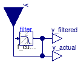

Package with base classes for Buildings.Fluid.Actuators
This package contains base classes that are used to construct the models in Buildings.Fluid.Actuators.
Extends from Modelica.Icons.BasesPackage (Icon for packages containing base classes).
| Name | Description |
|---|---|
| Partial model that implements the filtered opening for valves and dampers | |
| PartialDamperExponential | Partial model for air dampers with exponential opening characteristics |
| Partial three way valve | |
| Partial model for a two way valve | |
| Partial model for a two way valve using a Kv characteristic | |
| ValveParameters | Model with parameters for valves |
| Derivative of valve opening characteristics for equal percentage valve | |
| Valve opening characteristics for equal percentage valve | |
| Damper opening characteristics for an exponential damper | |
| Collection of models that illustrate model use and test models |
 Buildings.Fluid.Actuators.BaseClasses.ActuatorSignal
Buildings.Fluid.Actuators.BaseClasses.ActuatorSignal
Partial model that implements the filtered opening for valves and dampers

This model implements the filter that is used to approximate the travel
time of the actuator.
Models that extend this model use the signal
y_actual to obtain the
current position of the actuator.
See Buildings.Fluid.Actuators.UsersGuide for a description of the filter.
| Type | Name | Default | Description |
|---|---|---|---|
| Dynamics | |||
| Filtered opening | |||
| Boolean | filteredOpening | true | = true, if opening is filtered with a 2nd order CriticalDamping filter |
| Time | riseTime | 120 | Rise time of the filter (time to reach 99.6 % of an opening step) [s] |
| Init | init | Modelica.Blocks.Types.Init.I... | Type of initialization (no init/steady state/initial state/initial output) |
| Real | y_start | 1 | Initial value of output |
| Type | Name | Description |
|---|---|---|
| input RealInput | y | Actuator position (0: closed, 1: open) |
| output RealOutput | y_actual | Actual valve position |
 Buildings.Fluid.Actuators.BaseClasses.PartialDamperExponential
Buildings.Fluid.Actuators.BaseClasses.PartialDamperExponential
Partial model for air dampers with exponential opening characteristics

Partial model for air dampers with exponential opening characteristics. This is the base model for air dampers and variable air volume flow boxes. The model implements the functions that relate the opening signal, the pressure drop and the mass flow rate. The model also defines parameters that are used by different air damper models.
For a description of the opening characteristics and typical parameter values, see the damper model Exponential.
Extends from Buildings.Fluid.BaseClasses.PartialResistance (Partial model for a hydraulic resistance), Buildings.Fluid.Actuators.BaseClasses.ActuatorSignal (Partial model that implements the filtered opening for valves and dampers).
| Type | Name | Default | Description |
|---|---|---|---|
| replaceable package Medium | PartialMedium | Medium in the component | |
| MassFlowRate | m_flow_turbulent | if use_deltaM then deltaM*m_... | Turbulent flow if |m_flow| >= m_flow_turbulent [kg/s] |
| Boolean | use_deltaM | true | Set to true to use deltaM for turbulent transition, else ReC is used |
| Real | deltaM | 0.3 | Fraction of nominal mass flow rate where transition to turbulent occurs |
| Boolean | use_v_nominal | true | Set to true to use face velocity to compute area |
| Velocity | v_nominal | 1 | Nominal face velocity [m/s] |
| Area | A | m_flow_nominal/rho_default/v... | Face area [m2] |
| Boolean | roundDuct | false | Set to true for round duct, false for square cross section |
| Real | ReC | 4000 | Reynolds number where transition to turbulent starts |
| Real | kFixed | Flow coefficient of fixed resistance that may be in series with damper, k=m_flow/sqrt(dp), with unit=(kg.m)^(1/2). | |
| Nominal condition | |||
| MassFlowRate | m_flow_nominal | Nominal mass flow rate [kg/s] | |
| Pressure | dp_nominal | Pressure drop at nominal mass flow rate [Pa] | |
| Initialization | |||
| MassFlowRate | m_flow.start | 0 | Mass flow rate from port_a to port_b (m_flow > 0 is design flow direction) [kg/s] |
| Pressure | dp.start | 0 | Pressure difference between port_a and port_b [Pa] |
| Assumptions | |||
| Boolean | allowFlowReversal | true | = true to allow flow reversal, false restricts to design direction (port_a -> port_b) |
| Advanced | |||
| Diagnostics | |||
| Boolean | show_T | false | = true, if actual temperature at port is computed |
| Boolean | from_dp | false | = true, use m_flow = f(dp) else dp = f(m_flow) |
| Boolean | homotopyInitialization | true | = true, use homotopy method |
| Boolean | linearized | false | = true, use linear relation between m_flow and dp for any flow rate |
| Boolean | use_constant_density | true | Set to true to use constant density for flow friction |
| Dynamics | |||
| Filtered opening | |||
| Boolean | filteredOpening | true | = true, if opening is filtered with a 2nd order CriticalDamping filter |
| Time | riseTime | 120 | Rise time of the filter (time to reach 99.6 % of an opening step) [s] |
| Init | init | Modelica.Blocks.Types.Init.I... | Type of initialization (no init/steady state/initial state/initial output) |
| Real | y_start | 1 | Initial value of output |
| Damper coefficients | |||
| Real | a | -1.51 | Coefficient a for damper characteristics |
| Real | b | 0.105*90 | Coefficient b for damper characteristics |
| Real | yL | 15/90 | Lower value for damper curve |
| Real | yU | 55/90 | Upper value for damper curve |
| Real | k0 | 1E6 | Flow coefficient for y=0, k0 = pressure drop divided by dynamic pressure |
| Real | k1 | 0.45 | Flow coefficient for y=1, k1 = pressure drop divided by dynamic pressure |
| Type | Name | Description |
|---|---|---|
| FluidPort_a | port_a | Fluid connector a (positive design flow direction is from port_a to port_b) |
| FluidPort_b | port_b | Fluid connector b (positive design flow direction is from port_a to port_b) |
| input RealInput | y | Actuator position (0: closed, 1: open) |
| output RealOutput | y_actual | Actual valve position |
 Buildings.Fluid.Actuators.BaseClasses.PartialThreeWayValve
Buildings.Fluid.Actuators.BaseClasses.PartialThreeWayValve
Partial three way valve

Partial model of a three way valve. This is the base model for valves
with different opening characteristics, such as linear, equal percentage
or quick opening. The three way valve model consists of a mixer where
valves are placed in two of the flow legs. The third flow leg
has no friction.
The flow coefficient Kv for flow from port_1 → port_2 is
a parameter.
The flow coefficient for the bypass flow from port_3 → port_2
is computed as
Kv(port_3 → port_2)
fraK = ----------------------
Kv(port_1 → port_2)
where 0 < fraK ≤ 1 is a parameter with a default value
of fraK=0.7.
Since this model uses two way valves to construct a three way valve, see Buildings.Fluid.Actuators.BaseClasses.PartialTwoWayValve for details regarding the valve implementation.
Extends from Buildings.Fluid.BaseClasses.PartialThreeWayResistance (Flow splitter with partial resistance model at each port), Buildings.Fluid.Actuators.BaseClasses.ActuatorSignal (Partial model that implements the filtered opening for valves and dampers), Buildings.Fluid.Actuators.BaseClasses.ValveParameters (Model with parameters for valves).
| Type | Name | Default | Description |
|---|---|---|---|
| replaceable package Medium | PartialMedium | Medium in the component | |
| Real | fraK | 0.7 | Fraction Kv(port_3→port_2)/Kv(port_1→port_2) |
| Real | l[2] | {0,0} | Valve leakage, l=Kv(y=0)/Kv(y=1) |
| Flow Coefficient | |||
| CvTypes | CvData | Buildings.Fluid.Types.CvType... | Selection of flow coefficient |
| Real | Kv | Kv (metric) flow coefficient [m3/h/(bar)^(1/2)] | |
| Real | Cv | Cv (US) flow coefficient [USG/min/(psi)^(1/2)] | |
| Area | Av | Av (metric) flow coefficient [m2] | |
| Pressure-flow linearization | |||
| Real | deltaM | 0.02 | Fraction of nominal flow rate where linearization starts, if y=1 |
| Nominal condition | |||
| MassFlowRate | m_flow_nominal | Nominal mass flow rate [kg/s] | |
| Pressure | dpValve_nominal | Nominal pressure drop of fully open valve, used if CvData=Buildings.Fluid.Types.CvTypes.OpPoint [Pa] | |
| Pressure | dpFixed_nominal[2] | {0,0} | Nominal pressure drop of pipes and other equipment in flow legs at port_1 and port_3 [Pa] |
| Dynamics | |||
| Equations | |||
| Dynamics | energyDynamics | Modelica.Fluid.Types.Dynamic... | Formulation of energy balance |
| Dynamics | massDynamics | energyDynamics | Formulation of mass balance |
| Boolean | dynamicBalance | true | Set to true to use a dynamic balance, which often leads to smaller systems of equations |
| MassFlowRate | mDyn_flow_nominal | m_flow_nominal | Nominal mass flow rate for dynamic momentum and energy balance [kg/s] |
| Nominal condition | |||
| Time | tau | 10 | Time constant at nominal flow for dynamic energy and momentum balance [s] |
| Filtered opening | |||
| Boolean | filteredOpening | true | = true, if opening is filtered with a 2nd order CriticalDamping filter |
| Time | riseTime | 120 | Rise time of the filter (time to reach 99.6 % of an opening step) [s] |
| Init | init | Modelica.Blocks.Types.Init.I... | Type of initialization (no init/steady state/initial state/initial output) |
| Real | y_start | 1 | Initial value of output |
| Initialization | |||
| AbsolutePressure | p_start | Medium.p_default | Start value of pressure [Pa] |
| Temperature | T_start | Medium.T_default | Start value of temperature [K] |
| MassFraction | X_start[Medium.nX] | Medium.X_default | Start value of mass fractions m_i/m [kg/kg] |
| ExtraProperty | C_start[Medium.nC] | fill(0, Medium.nC) | Start value of trace substances |
| ExtraProperty | C_nominal[Medium.nC] | fill(1E-2, Medium.nC) | Nominal value of trace substances. (Set to typical order of magnitude.) |
| Advanced | |||
| Boolean | from_dp | true | = true, use m_flow = f(dp) else dp = f(m_flow) |
| PortFlowDirection | portFlowDirection_1 | Modelica.Fluid.Types.PortFlo... | Flow direction for port_1 |
| PortFlowDirection | portFlowDirection_2 | Modelica.Fluid.Types.PortFlo... | Flow direction for port_2 |
| PortFlowDirection | portFlowDirection_3 | Modelica.Fluid.Types.PortFlo... | Flow direction for port_3 |
| Boolean | linearized[2] | {false,false} | = true, use linear relation between m_flow and dp for any flow rate |
| Boolean | homotopyInitialization | true | = true, use homotopy method |
| Nominal condition | |||
| Density | rhoStd | Medium.density_pTX(101325, 2... | Inlet density for which valve coefficients are defined [kg/m3] |
| Type | Name | Description |
|---|---|---|
| FluidPort_a | port_1 | First port, typically inlet |
| FluidPort_b | port_2 | Second port, typically outlet |
| FluidPort_a | port_3 | Third port, can be either inlet or outlet |
| input RealInput | y | Actuator position (0: closed, 1: open) |
| output RealOutput | y_actual | Actual valve position |
 Buildings.Fluid.Actuators.BaseClasses.PartialTwoWayValve
Buildings.Fluid.Actuators.BaseClasses.PartialTwoWayValve
Partial model for a two way valve

Partial model for a two way valve. This is the base model for valves with different opening characteristics, such as linear, equal percentage, quick opening or pressure-independent.
To prevent the derivative d/dP (m_flow) to be infinite near
the origin, this model linearizes the pressure drop versus flow relation
ship. The region in which it is linearized is parameterized by
m_turbulent_flow = deltaM * m_flow_nominal
Because the parameterization contains Kv_SI, the values for
deltaM and dp_nominal need not be changed if the valve size
changes.
In contrast to the model in
Modelica.Fluid, this model uses the parameter Kv_SI,
which is the flow coefficient in SI units, i.e.,
it is the ratio between mass flow rate in kg/s and square root
of pressure drop in Pa.
This model allows different parameterization of the flow resistance. The different parameterizations are described in Buildings.Fluid.Actuators.BaseClasses.ValveParameters.
The two way valve models are implemented using this partial model, as opposed to using different functions for the valve opening characteristics, because each valve opening characteristics has different parameters.
Extends from Buildings.Fluid.BaseClasses.PartialResistance (Partial model for a hydraulic resistance), Buildings.Fluid.Actuators.BaseClasses.ValveParameters (Model with parameters for valves), Buildings.Fluid.Actuators.BaseClasses.ActuatorSignal (Partial model that implements the filtered opening for valves and dampers).
| Type | Name | Default | Description |
|---|---|---|---|
| replaceable package Medium | PartialMedium | Medium in the component | |
| MassFlowRate | m_flow_turbulent | deltaM*abs(m_flow_nominal) | Turbulent flow if |m_flow| >= m_flow_turbulent [kg/s] |
| Real | l | 0.0001 | Valve leakage, l=Kv(y=0)/Kv(y=1) |
| Nominal condition | |||
| MassFlowRate | m_flow_nominal | Nominal mass flow rate [kg/s] | |
| Pressure | dp_nominal | dpValve_nominal + dpFixed_no... | Pressure drop at nominal mass flow rate [Pa] |
| Pressure | dpValve_nominal | Nominal pressure drop of fully open valve, used if CvData=Buildings.Fluid.Types.CvTypes.OpPoint [Pa] | |
| Pressure | dpFixed_nominal | 0 | Pressure drop of pipe and other resistances that are in series [Pa] |
| Initialization | |||
| MassFlowRate | m_flow.start | 0 | Mass flow rate from port_a to port_b (m_flow > 0 is design flow direction) [kg/s] |
| Flow Coefficient | |||
| CvTypes | CvData | Buildings.Fluid.Types.CvType... | Selection of flow coefficient |
| Real | Kv | Kv (metric) flow coefficient [m3/h/(bar)^(1/2)] | |
| Real | Cv | Cv (US) flow coefficient [USG/min/(psi)^(1/2)] | |
| Area | Av | Av (metric) flow coefficient [m2] | |
| Pressure-flow linearization | |||
| Real | deltaM | 0.02 | Fraction of nominal flow rate where linearization starts, if y=1 |
| Assumptions | |||
| Boolean | allowFlowReversal | true | = true to allow flow reversal, false restricts to design direction (port_a -> port_b) |
| Advanced | |||
| Diagnostics | |||
| Boolean | show_T | false | = true, if actual temperature at port is computed |
| Boolean | from_dp | false | = true, use m_flow = f(dp) else dp = f(m_flow) |
| Boolean | homotopyInitialization | true | = true, use homotopy method |
| Boolean | linearized | false | = true, use linear relation between m_flow and dp for any flow rate |
| Nominal condition | |||
| Density | rhoStd | Medium.density_pTX(101325, 2... | Inlet density for which valve coefficients are defined [kg/m3] |
| Dynamics | |||
| Filtered opening | |||
| Boolean | filteredOpening | true | = true, if opening is filtered with a 2nd order CriticalDamping filter |
| Time | riseTime | 120 | Rise time of the filter (time to reach 99.6 % of an opening step) [s] |
| Init | init | Modelica.Blocks.Types.Init.I... | Type of initialization (no init/steady state/initial state/initial output) |
| Real | y_start | 1 | Initial value of output |
| Type | Name | Description |
|---|---|---|
| FluidPort_a | port_a | Fluid connector a (positive design flow direction is from port_a to port_b) |
| FluidPort_b | port_b | Fluid connector b (positive design flow direction is from port_a to port_b) |
| input RealInput | y | Actuator position (0: closed, 1: open) |
| output RealOutput | y_actual | Actual valve position |
Buildings.Fluid.Actuators.BaseClasses.PartialTwoWayValveKv
Partial model for a two way valve using a Kv characteristic
Partial model for valves with different opening characteristics, such as linear, equal percentage or quick opening. This partial extends from PartialTwoWayValve and also contains the governing equations for these three two way valve models.
Models that extend this model need to provide a binding equation
for the flow function phi.
An example of such a code can be found in
Buildings.Fluid.Actuators.Valves.TwoWayLinear.
Extends from Buildings.Fluid.Actuators.BaseClasses.PartialTwoWayValve (Partial model for a two way valve).
| Type | Name | Default | Description |
|---|---|---|---|
| replaceable package Medium | PartialMedium | Medium in the component | |
| Real | l | 0.0001 | Valve leakage, l=Kv(y=0)/Kv(y=1) |
| Nominal condition | |||
| MassFlowRate | m_flow_nominal | Nominal mass flow rate [kg/s] | |
| Pressure | dpValve_nominal | Nominal pressure drop of fully open valve, used if CvData=Buildings.Fluid.Types.CvTypes.OpPoint [Pa] | |
| Pressure | dpFixed_nominal | 0 | Pressure drop of pipe and other resistances that are in series [Pa] |
| Initialization | |||
| MassFlowRate | m_flow.start | 0 | Mass flow rate from port_a to port_b (m_flow > 0 is design flow direction) [kg/s] |
| Pressure | dp.start | 0 | Pressure difference between port_a and port_b [Pa] |
| Flow Coefficient | |||
| CvTypes | CvData | Buildings.Fluid.Types.CvType... | Selection of flow coefficient |
| Real | Kv | Kv (metric) flow coefficient [m3/h/(bar)^(1/2)] | |
| Real | Cv | Cv (US) flow coefficient [USG/min/(psi)^(1/2)] | |
| Area | Av | Av (metric) flow coefficient [m2] | |
| Pressure-flow linearization | |||
| Real | deltaM | 0.02 | Fraction of nominal flow rate where linearization starts, if y=1 |
| Assumptions | |||
| Boolean | allowFlowReversal | true | = true to allow flow reversal, false restricts to design direction (port_a -> port_b) |
| Advanced | |||
| Diagnostics | |||
| Boolean | show_T | false | = true, if actual temperature at port is computed |
| Boolean | from_dp | false | = true, use m_flow = f(dp) else dp = f(m_flow) |
| Boolean | homotopyInitialization | true | = true, use homotopy method |
| Boolean | linearized | false | = true, use linear relation between m_flow and dp for any flow rate |
| Nominal condition | |||
| Density | rhoStd | Medium.density_pTX(101325, 2... | Inlet density for which valve coefficients are defined [kg/m3] |
| Dynamics | |||
| Filtered opening | |||
| Boolean | filteredOpening | true | = true, if opening is filtered with a 2nd order CriticalDamping filter |
| Time | riseTime | 120 | Rise time of the filter (time to reach 99.6 % of an opening step) [s] |
| Init | init | Modelica.Blocks.Types.Init.I... | Type of initialization (no init/steady state/initial state/initial output) |
| Real | y_start | 1 | Initial value of output |
| Type | Name | Description |
|---|---|---|
| FluidPort_a | port_a | Fluid connector a (positive design flow direction is from port_a to port_b) |
| FluidPort_b | port_b | Fluid connector b (positive design flow direction is from port_a to port_b) |
| input RealInput | y | Actuator position (0: closed, 1: open) |
| output RealOutput | y_actual | Actual valve position |
Model with parameters for valves
Model that computes the flow coefficients of valves. This base class allows the following modeling options, which have been adapted from the valve implementation in Modelica.Fluid to specify the valve flow coefficient in fully open conditions:
CvData = Buildings.Fluid.Types.CvTypes.Av: the flow coefficient is given by the metric Av coefficient (m^2).CvData = Buildings.Fluid.Types.CvTypes.Kv: the flow coefficient is given by the metric Kv coefficient (m^3/h).CvData = Buildings.Fluid.Types.CvTypes.Cv: the flow coefficient is given by the US Cv coefficient (USG/min).CvData = Buildings.Fluid.Types.CvTypes.OpPoint: the flow is computed from the nominal operating point specified by dp_nominal and m_flow_nominal.
The treatment of parameters Kv and Cv is
explained in detail in the
Users Guide.
In contrast to the model in
Modelica.Fluid, this model uses the protected parameter Kv_SI,
which is the flow coefficient in SI units, i.e.,
it is the ratio between mass flow rate in kg/s and square root
of pressure drop in Pa.
The value of Kv_SI is computed based on the parameters
Av,
Kv,
Cv, or, if
CvData = Buildings.Fluid.Types.CvTypes.OpPoint, based on
m_flow_nominal and dpValve_nominal.
Conversely, if
CvData <> Buildings.Fluid.Types.CvTypes.OpPoint, then
dpValve_nominal is computed based on
Av,
Kv, or
Cv, and the nominal mass flow rate m_flow_nominal.
Therefore, if
CvData <> Buildings.Fluid.Types.CvTypes.OpPoint,
then specifying a value for dpValve_nominal is a syntax error.
| Type | Name | Default | Description |
|---|---|---|---|
| Flow Coefficient | |||
| CvTypes | CvData | Buildings.Fluid.Types.CvType... | Selection of flow coefficient |
| Real | Kv | Kv (metric) flow coefficient [m3/h/(bar)^(1/2)] | |
| Real | Cv | Cv (US) flow coefficient [USG/min/(psi)^(1/2)] | |
| Area | Av | Av (metric) flow coefficient [m2] | |
| Pressure-flow linearization | |||
| Real | deltaM | 0.02 | Fraction of nominal flow rate where linearization starts, if y=1 |
| Nominal condition | |||
| MassFlowRate | m_flow_nominal | Nominal mass flow rate [kg/s] | |
| Pressure | dpValve_nominal | Nominal pressure drop of fully open valve, used if CvData=Buildings.Fluid.Types.CvTypes.OpPoint [Pa] | |
| Advanced | |||
| Nominal condition | |||
| Density | rhoStd | Inlet density for which valve coefficients are defined [kg/m3] | |
Derivative of valve opening characteristics for equal percentage valve
This function computes the derivative of the opening characteristics of an equal percentage valve.
The function is the derivative of TwoWayValveEqualPercentage.
| Type | Name | Default | Description |
|---|---|---|---|
| Real | y | Valve opening signal, y=1 is fully open | |
| Real | R | Rangeability, R=50...100 typically | |
| Real | l | Valve leakage, l=Kv(y=0)/Kv(y=1) | |
| Real | delta | Range of significant deviation from equal percentage law | |
| Real | der_y | Derivative of valve opening signal |
| Type | Name | Description |
|---|---|---|
| Real | der_phi | Derivative of ratio actual to nominal mass flow rate, dphi/dy |
Valve opening characteristics for equal percentage valve
This function computes the opening characteristics of an equal percentage valve.
The function is used by the model TwoWayValveEqualPercentage.
For y < delta/2, the valve characteristics is linear. For y > 3*delta/2
the valve characteristics is equal percentage. In between, a cubic spline is used to ensure
that the valve characteristics is once continuously differentiable with respect to y.
| Type | Name | Default | Description |
|---|---|---|---|
| Real | y | Valve opening signal, y=1 is fully open | |
| Real | R | Rangeability, R=50...100 typically | |
| Real | l | Valve leakage, l=Kv(y=0)/Kv(y=1) | |
| Real | delta | Range of significant deviation from equal percentage law |
| Type | Name | Description |
|---|---|---|
| Real | phi | Ratio actual to nominal mass flow rate, phi=Cv(y)/Cv(y=1) |
Damper opening characteristics for an exponential damper
This function computes the opening characteristics of an exponential damper.
The function is used by the model Buildings.Fluid.Actuators.Dampers.Exponential.
For yL < y < yU, the damper characteristics is
kd(y) = exp(a+b (1-y)).
Outside this range, the damper characteristic is defined by a quadratic polynomial.
Note that this implementation returns sqrt(kd(y)) instead of kd(y). This is done for numerical reason since otherwise kd(y) may be an iteration variable, which may cause a lot of warnings and slower convergence if the solver attempts kd(y) < 0 during the iterative solution procedure.
| Type | Name | Default | Description |
|---|---|---|---|
| Real | y | Control signal, y=0 is closed, y=1 is open | |
| Real | a | Coefficient a for damper characteristics | |
| Real | b | Coefficient b for damper characteristics | |
| Real | cL[3] | Polynomial coefficients for curve fit for y < yl | |
| Real | cU[3] | Polynomial coefficients for curve fit for y > yu | |
| Real | yL | Lower value for damper curve | |
| Real | yU | Upper value for damper curve |
| Type | Name | Description |
|---|---|---|
| Real | kThetaSqRt | Flow coefficient, kThetaSqRT = =sqrt(kTheta) = sqrt(pressure drop/dynamic pressure) |